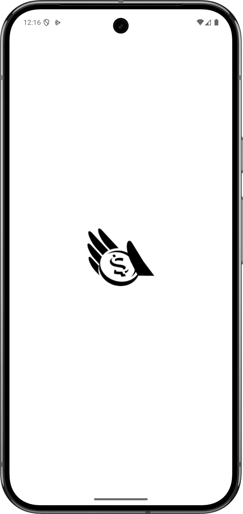

Magic Coin - Mobile Application
Make an object appear from thin air, move it with a tilt, make it vanish with a flick.
Dart
Flutter
Make an object appear from thin air, move it with a tilt, make it vanish with a flick.
Magic Coin is a Flutter app built for a close-up magic trick: an object appears out of thin air on a fullscreen black stage, can be freely dragged around, and vanishes off the edge of the screen when flicked away fast enough. What started as a single coin has grown into a whole set of props.
It can appear with a two-finger tap, a one-finger tap, or a sharp shake of the phone against the palm, recognised from the motion sensor so that a real palm hit is distinguished from ordinary handling. Once on screen, the object rolls like a ball on a tilted tray: it accelerates as the phone tilts, slows with friction and stops at the edges.
The behaviour is deliberately physical: the object vanishes only if it is released fast enough near the edge it is leaving through, while a slow release snaps it back.

Eighteen props are available — coins, a ring, a keyring, a lighter, a die, an AirPod, a key, even an Oreo — each with its own artwork. A hidden settings entry, invisible but tappable, opens a gold-accented sheet to choose the object, its size, the appearance gesture and the background.
The project was built test-first: every gesture and physics rule is backed by an automated test, with the trickiest logic — multi-touch detection, fling and tilt physics — written as pure functions that can be tested without a device. It is a Flutter app using the phone's sensors and local storage for all preferences.
All app and physics logic — gesture detectors, fling/tilt geometry, and settings persistence — is plain Dart, kept deliberately free of Flutter widget dependencies so it can be covered by fast, headless unit tests.
Renders the fullscreen immersive stage, the draggable object, and the custom "Magic Noir" settings bottom sheet, and ties the pure-logic modules to real touch, sensor, and lifecycle events.
Streams accelerometer data for two independent features: the shake-to-appear gesture and the continuous tilt readings that drive the on-screen physics.
Persists every user choice to disk behind a single SettingsRepository wrapper — selected object, appear gesture, each variant's own size, the glass-effect toggle, and the custom background — restored automatically on the next launch.
Lets the user pick a photo from the device gallery to replace the black stage with a custom background.